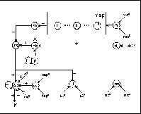
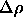

Since an ARTMAP network is based on two networks of the ART1 model, it
is useful to know how ART1 is realized in SNNS. Having taken two of
the ART1 (ART and ART
and ART ) networks as they were defined in
section
) networks as they were defined in
section  , we add several units that represent the
MAP field. The connections between ART
, we add several units that represent the
MAP field. The connections between ART and the MAP field, ART
and the MAP field, ART and
the MAP field, as well as those within the MAP field are shown in
figure
and
the MAP field, as well as those within the MAP field are shown in
figure  . The figure lacks the full connection
from the F layer to the F
. The figure lacks the full connection
from the F layer to the F layer and those from each F
layer and those from each F unit to
its respective F unit and vice versa.
unit to
its respective F unit and vice versa.

The map field units represent the categories, onto which the
ART classes are mapped
classes are mapped . The G unit is the MAP field gain
unit. The units rm (reset map), rb (reset F
. The G unit is the MAP field gain
unit. The units rm (reset map), rb (reset F ), rg (reset
general),
), rg (reset
general),  (vigilance) and d
(vigilance) and d (delay 1) represent the
inter-ART-reset control.
(delay 1) represent the
inter-ART-reset control.

and qu (quotient) have to realize the Match-Tracking-Mechanism and cl (classified) and nc (not classifiable) again show whether a pattern has been classified or was not classifiable.